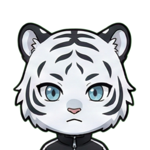

手札の5枚を使って、同じ「九九の段」に属する数字を集めるゲームです。
💡 ヒント（ランプ）の見方
カード背景のランプは、その数字が属する段を表しています。配置は左上から以下の通りです。
役と得点
- 3カード（同じ段が3枚）: 3000点
- 4カード（同じ段が4枚）: 4000点
- 5カード（同じ段が5枚）: 5000点
🤝 ハブルール（重複利用）
1つの数字を複数の段の役で同時に使うことができます。
（例：「36」は4の段、6の段、9の段などの役の一部として重複カウントされ、複数の役ができた場合は点数がすべて合算されます）
特別役
1, 25, 49, 64, 81 の5枚を集めると「LEGENDARY SQUARES」となり 10000点
を獲得します。
進行
1ラウンドにつき各プレイヤーは2回アクション（捨てる＆場から補充、またはパス）を行います。
全4ラウンドの合計スコアで勝敗を決めます。
🤖 キャラクターの特徴
-
01 カエデ: 真面目。小さい役でも着実に集めていく。
-

02 スノウ: 積極的。複数段を積極的に狙っていく。
-
03 ピヨン: 破天荒。常に9000点越えを目指す。
-
04 ノエル: 安全第一。2つの段で3カードを目指す。
-

05 カワエ: 柔軟。4カード中心で点数を稼ぐ。
-

06 ラビィ: こだわり。3・6・9の倍数が好き。
-

07 アオン: 慎重。1枚しかカードは捨てない。
-

08 ワニタ: 理論派。確立を考えてカードを選ぶ。
-

09 パンク: 前向き。パスは嫌い。いい役を狙い続ける。
-

10 ミケン: 奇策。場のカードを使い揃えようとする。
-

11 ハムコ: 我が道。自分の信じた組み合わせを求める。
-

12 プリス: ロマン。5カードが最優先。